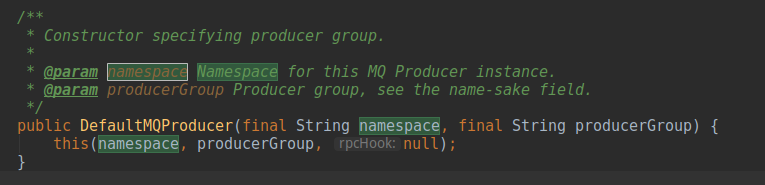
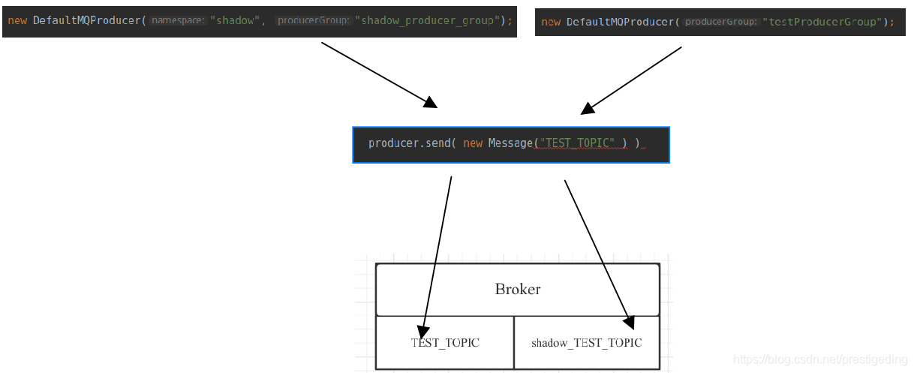

- 01 搭建学习环境准备篇.md.html
- 02 RocketMQ 核心概念扫盲篇.md.html
- 03 消息发送 API 详解与版本变迁说明.md.html
- 04 结合实际应用场景谈消息发送.md.html
- 05 消息发送核心参数与工作原理详解.md.html
- 06 消息发送常见错误与解决方案.md.html
- 07 事务消息使用及方案选型思考.md.html
- 08 消息消费 API 与版本变迁说明.md.html
- 09 DefaultMQPushConsumer 核心参数与工作原理.md.html
- 10 DefaultMQPushConsumer 使用示例与注意事项.md.html
- 11 DefaultLitePullConsumer 核心参数与实战.md.html
- 12 结合实际场景再聊 DefaultLitePullConsumer 的使用.md.html
- 13 结合实际场景顺序消费、消息过滤实战.md.html
- 14 消息消费积压问题排查实战.md.html
- 15 RocketMQ 常用命令实战.md.html
- 16 RocketMQ 集群性能摸高.md.html
- 17 RocketMQ 集群性能调优.md.html
- 18 RocketMQ 集群平滑运维.md.html
- 19 RocketMQ 集群监控（一）.md.html
- 20 RocketMQ 集群监控（二）.md.html
- 21 RocketMQ 集群告警.md.html
- 22 RocketMQ 集群踩坑记.md.html
- 23 消息轨迹、ACL 与多副本搭建.md.html
- 24 RocketMQ-Console 常用页面指标获取逻辑.md.html
- 25 RocketMQ Nameserver 背后的设计理念.md.html
- 26 Java 并发编程实战.md.html
- 27 从 RocketMQ 学基于文件的编程模式（一）.md.html
- 28 从 RocketMQ 学基于文件的编程模式（二）.md.html
- 29 从 RocketMQ 学 Netty 网络编程技巧.md.html
- 30 RocketMQ 学习方法之我见.md.html
- 捐赠
03 消息发送 API 详解与版本变迁说明
RocketMQ 在捐赠给 Apache 成为 Apache 基金会顶级项目之前的版本为 3.x，捐赠给 Apache 的版本号从 4.0.0 开始。由于 RocketMQ 在成为 Apache 顶级项目之前也一直在开源，故 4.0.0 版本其版本包含的内容就非常全面了，从 4.0.0 后面的进化主要是提供新的功能，例如消息轨迹、ACL、多副本等新功能，RocketMQ 的内核非常稳定，客户端的变更也非常小，笔者做过测试，使用 RocketMQ 4.0.0 版本的 RocketMQ-Client 向 4.7.0 版本的 RocketMQ 服务器发送消息、消费消息都能正常。
从本篇开始，我们将向大家介绍 RocketMQ 消息发送方面的知识。在 RocketMQ 中消息发送者、消息消费者统称为客户端，对应 RocketMQ 的 Client 模块。
故大家在使用 RocketMQ 进行消息发送时，需要引入如下 Maven 依赖：
<dependency>
<groupId>org.apache.rocketmq</groupId>
<artifactId>rocketmq-client</artifactId>
<version>4.7.1</version>
</dependency>
接下来先介绍一下 RocketMQ 消息发送相关的 API，然后用一个简单的示例演示一下消息发送，下一篇将结合场景展示消息发送 API 的使用技巧。
消息发送 API 详解
RocketMQ 消息发送者的核心类层次结构如下图所示：

对上述类图的说明如下。
MQAdmin
MQ 基本的管理接口，提供对 MQ 提供基础的管理能力，其方法说明如下。
void createTopic(String key, String newTopic, int queueNum, int topicSysFlag)
创建 Topic，其参数含义如下：
- String key：根据 key 查找 Broker，即新主题创建在哪些 Broker 上
- String newTopic：主题名称
- int queueNum：主题队列个数
- int topicSysFlag：主题的系统参数
long searchOffset(MessageQueue mq, long timestamp)
根据队列与时间戳，从消息消费队列中查找消息，返回消息的物理偏移量（在 commitlog 文件中的偏移量）。参数列表含义如下：
- MessageQueue mq：消息消费队列
- long timestamp：时间戳
long maxOffset(final MessageQueue mq)
查询消息消费队列当前最大的逻辑偏移量，在 consumequeue 文件中的偏移量。
long minOffset(final MessageQueue mq)
查询消息消费队列当前最小的逻辑偏移量。
long earliestMsgStoreTime(MessageQueue mq)
返回消息消费队列中第一条消息的存储时间戳。
MessageExt viewMessage(String offsetMsgId)
根据消息的物理偏移量查找消息。
MessageExt viewMessage(String topic, String msgId)
根据主题与消息的全局唯一 ID 查找消息。
QueryResult queryMessage(String topic, String key, int maxNum, long begin,long end)
批量查询消息，其参数列表如下：
- String topic：主题名称
- String key：消息索引 Key
- int maxNum：本次查询最大返回消息条数
- long begin：开始时间戳
- long end：结束时间戳
MQProducer
消息发送者接口。核心接口说明如下：
void start()
启动消息发送者，在进行消息发送之前必须先调用该方法。
void shutdown()
关闭消息发送者，如果不需要再使用该生产者，需要调用该方法释放资源。
List <MessageQueue> fetchPublishMessageQueues(String topic)
根据 Topic 查询所有的消息消费队列列表。
SendResult send(Message msg, long timeout)
同步发送，参数列表说明如下：
- Message msg：待发送的消息对象
- long timeout：超时时间，默认为 3s
void send(Message msg, SendCallback sendCallback, long timeout)
异步消息发送，参数列表说明如下：
- Message msg：待发送的消息
- SendCallback sendCallback：异步发送回调接口
- long timeout：发送超时时间，默认为 3s
void sendOneway(Message msg)
Oneway 消息发送模式，该模式的特点是不在乎消息的发送结果，无论成功或失败。
SendResult send(Message msg, MessageQueue mq)
指定消息队列进行消息发送，其重载方法分表代表同步、异步 Oneway 发送模式。
SendResult send(Message msg, MessageQueueSelector selector, Object arg,long timeout)
消息发送时使用自定义队列负载机制，由 MessageQueueSelector 实现，Object arg 为传入 selector 中的参数。MessageQueueSelector 声明如下，此处的 arg 为 select 方法的第三个参数。

同样该方法的重载方法支持异步、Oneway 方式。
TransactionSendResult sendMessageInTransaction(Message msg,Object arg)
发送事务消息，事务消息只有同步发送方式，其中 Object arg 为额外参数，用在事务消息回调相关接口。

该 API 从 4.3.0 版本开始引入。
SendResult send(Collection<Message> msgs, MessageQueue mq, long timeout)
指定消息消费队列批量发送消息，批量发送只有同步发送模式。
SendResult send(Collection<Message> msgs, long timeout)
批量消息发送，超时时间默认为 3s。
Message request(Message msg, long timeout)
RocketMQ 在 4.6.0 版本中引入了 request-response 请求模型，就消息发送者发送到 Broker，需要等消费者处理完才返回，该 request 的重载方法与 send 方法一样，在此不再重复介绍。
ClientConfig
客户端配置相关。这里先简单介绍几个核心参数，后续在实践部分还会重点介绍。
- String namesrvAddr：NameServer 地址
- String clientIP：客户断的 IP 地址
- String instanceName：客户端的实例名称
- String namespace：客户端所属的命名空
DefaultMQProducer
消息发送者默认实现类。
TransactionMQProducer
事务消息发送者默认实现类。
消息发送 API 简单使用示例
通过上面的梳理，我们应该对消息发送的 API 有了一个较为全面的认识，接下来我们脱离业务场景的情况下编写一些 Demo 程序，进行简单的入门。
温馨提示：目前绝大多数优秀的开源框架，要么会提供对应的单元测试，要么会提供一些示例代码，RocketMQ 当然也不例外。在 RocketMQ 的源码中有一个 example 模块，是官方提供的一系列示例代码，用于入门是非常合适的。
exmaple 包中示例代码如下图所示：

本文先简单使用 quickstart 中的 Producer 类，简单对几个 API 进行演示，下一篇文章将结合业务场景介绍其使用场景与方法、常见错误点。
示例代码如下：
public class Producer {
public static void main(String[] args) throws Exception{
DefaultMQProducer producer = new
DefaultMQProducer("please_rename_unique_group_name");
producer.setNamesrvAddr("127.0.0.1:9876");
producer.start();
//发送单条消息
Message msg = new Message("TOPIC_TEST", "hello rocketmq".getBytes());
SendResult sendResult = null;
sendResult = producer.send(msg);
// 输出结果
System.out.printf("%s%n", sendResult);
// 发送带 Key 的消息
msg = new Message("TOPIC_TEST", null, "ODS2020072615490001", "{\"id\":1, \"orderNo\":\"ODS2020072615490001\",\"buyerId\":1,\"sellerId\":1 }".getBytes());
sendResult = producer.send(msg);
// 输出结果
System.out.printf("%s%n", sendResult);
// 批量发送
List<Message> msgs = new ArrayList<>();
msgs.add( new Message("TOPIC_TEST", null, "ODS2020072615490002", "{\"id\":2, \"orderNo\":\"ODS2020072615490002\",\"buyerId\":1,\"sellerId\":3 }".getBytes()) );
msgs.add( new Message("TOPIC_TEST", null, "ODS2020072615490003", "{\"id\":4, \"orderNo\":\"ODS2020072615490003\",\"buyerId\":2,\"sellerId\":4 }".getBytes()) );
sendResult = producer.send(msgs);
System.out.printf("%s%n", sendResult);
// 使用完毕后，关闭消息发送者
producer.shutdown();
}
}
我们可以从 RocketMQ-Console 中查询刚发送的消息。

有了对 API 的说明，对如何使用 API 就是小菜一碟，笔者觉得一一罗列各个 API 的调用完全没有必要，故本篇关于 API 的使用就介绍到这里，下一篇会结合业务场景来介绍如何运用发送 API 解决实际问题，并且常见的错误示例。
消息发送 API 版本演变说明
在介绍完消息发送 API 后，笔者想再介绍一下 API 的几个重大变更版本，以及简单介绍其背后引入的目的，以便大家对 API 理解得更透彻，达到知其然而知其所以然。
Namespace 概念的引入
在 RocketMQ 4.5.1 版本正式引入了 Namespace 概念，在 API 上体现在构建 DefaultMQProducer 上，如下图所示：

即在 4.5.1 版本之前 DefaultMQProducer 的重载构造函数的参数列表中是不会包含 Namespace。
那与之带来的问题是，在 RocketMQ 4.5.1 之后，在构建 DefaultMQProducer 时，是需要传入这个参数还是可以不传？该参数有什么作用呢？
Namespace，顾名思义，命名空间，为消息发送者、消息消费者编入到一个命名空间中。在笔者的理解中，Namespace 的引入，有点类似 RocketMQ 支持多环境、多标签、全链路压测场景。
下面我以全链路压测为场景说明一下。所谓的全链路压测场景，就是当请求的流量为测试环境时，希望将消息发送到影子 Topic，如果是正式流量，就发送到正式 Topic。

即调用 DefaultMQProducer 的 send 方法向主题 TOPIC_TEST 发送消息时，Namespace 为 shadow 的 producer 会将消息发送到 shadow_TEST_TOPIC，这样只需要根据不同的上下文文环境标记来选择不同的消息发送者即可。关于全链路压测上下文，可以参考笔者的博文：
当然消息发送者与消息消费者的命名空间必须一样，才能彼此协作。
一言以蔽之，Namespace 主要为消息发送者、消息消费者进行分组，底层的逻辑是改变 Topic 的名称。
request-response 响应模型 API
RocketMQ 在 4.6.0 版本中引入了 request-response 请求模型，就是消息发送者发送到 Broker，需要等消费者处理完才返回。其相关的 API 如下：

笔者一家之言：这个的使用场景还是偏少，而且不知大家是否与笔者有同样的疑问，一个 Topic 有多个消费组订阅，那是要等所有的订阅者都处理完还是主要其中一个消费组处理完成，如果所有消费者不在线又怎么办？按照笔者的经验，消息中间件的引入就是解耦消息发送者与消息消费者，如果是这种模式，与普通的服务调用相比又有什么优势呢？
消息轨迹与 ACL
RocketMQ 在 4.4.0 开始引入了消息轨迹与 ACL。
- 消息轨迹：支持跟踪消息发送、消息消费的全过程，即能跟踪消息的发送 IP、存储服务器，什么时候被哪个消费者消费。
- ACL：访问权限控制，即可以 Topic 消息发送、订阅进行授权，只有授权用户才能发送消息到指定 Topic。
相关的 API 变更如下：

而 ACL 是借助 RPCHook 机制，故 API 并未发生变化。
小结
本文详细介绍了消息发送相关的类体系与各 API 参数列表，然后搭建 Demo 程序演示 API 的调用，最后梳理了 RocketMQ 从 4.0 到 4.7 关于消息发送 API 的变化记录，并且讲述 API 变化后面的背景。
下一篇将结合实际场景，对消息发送 API 进行灵活运用以及常见问题分析。
© 2019 - 2023 Liangliang Lee. Powered by gin and hexo-theme-book.